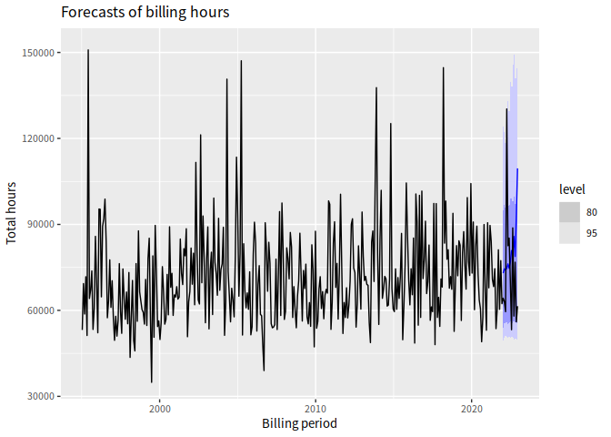
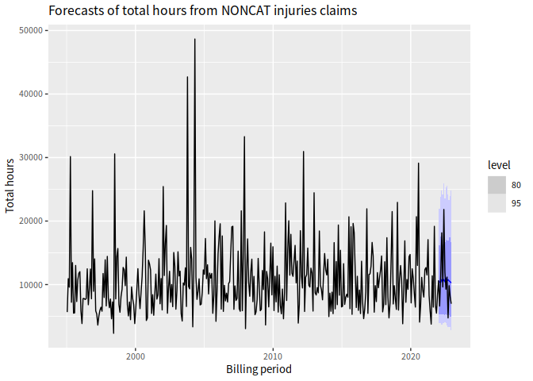

This package provides functions to help with forecasting attendant care hours for the Transport Accident Commission.
Installation
# First install the dependencies
install.packages(c("tsibble","fabletools","abind","distributional","dplyr",
"forcats","forecast","furrr","ggplot2","hts","janitor","lubridate",
"MASS","readr","stringr","tibble","tidyr","tsbox","remotes"))
# Then install this package
remotes::install_github("robjhyndman/TACforecasting")Example
The data included in the package and in this example has been randomly generated. No real data is included in this repository.
# Read data
group_costs <- read_tac_data(
claims_file = "data-raw/T086_claim_header.csv",
costs_file = "data-raw/T086_attendant_care_hours.csv"
)
# Plot total hours by billing period
plot_total_hours(group_costs)
# Plot total hours per age group by billing period
plot_total_hours(group_costs, age_group, include_average = FALSE) +
ggtitle("Hours by age group in each billing period")
# Plot total hours per injury group by billing period
plot_total_hours(group_costs, injury_group, include_average = FALSE) +
ggtitle("Hours by injury group in each billing period")
# Compute forecasts of total hours by age group and injury group
# Keep back 2022 as test set
fable_forecasts_hours <- group_costs |>
filter(billing_period <= as.Date("2021-12-31")) |>
get_forecasts(h = 13, nsim = 200)
# Plot forecasts of total hours
plot_forecasts(fable_forecasts_hours, group_costs)
# Plot forecasts of total hours by age group
plot_forecasts(fable_forecasts_hours, group_costs, show_age_group = "20-34") +
ggtitle("Forecasts of total hours for 20-34 year olds")
# Plot forecasts of total hours by injury group
plot_forecasts(fable_forecasts_hours, group_costs, show_injury_group = "NONCAT") +
ggtitle("Forecasts of total hours from NONCAT injuries claims")
# Compute accuracy statistics on the 2022 test set
tac_accuracy(fable_forecasts_hours, group_costs)
#> # A tibble: 13 × 6
#> h RMSE MAE MAPE coverage CRPS
#> <int> <dbl> <dbl> <dbl> <dbl> <dbl>
#> 1 1 8734. 8734. 13.6 1 4549.
#> 2 2 11377. 11377. 18.0 1 5234.
#> 3 3 14535. 14535. 24.4 1 7095.
#> 4 4 55633. 55633. 42.7 0 46918.
#> 5 5 6335. 6335. 7.67 1 7137.
#> 6 6 10539. 10539. 12.4 1 8060.
#> 7 7 6697. 6697. 9.55 1 4261.
#> 8 8 27604. 27604. 51.8 1 12819.
#> 9 9 9059. 9059. 10.2 1 10042.
#> 10 10 27780. 27780. 47.9 1 10161.
#> 11 11 2025. 2025. 2.64 1 4404.
#> 12 12 36674. 36674. 65.5 1 10075.
#> 13 13 48086. 48086. 78.2 1 7002.
# Compute accuracy statistics on a rolling origin
# (This takes a long time to run)
tscv_accuracy(group_costs, h = 13, nsim = 200, init = 195, step = 6) |>
filter(!is.na(RMSE), h <= 24) |>
summarise(
RMSE = sqrt(mean(RMSE^2)),
MAE = mean(MAE),
MAPE = mean(MAPE),
Coverage = 100*mean(coverage),
CRPS = mean(CRPS),
.by = h
)
#> # A tibble: 13 × 6
#> h RMSE MAE MAPE Coverage CRPS
#> <int> <dbl> <dbl> <dbl> <dbl> <dbl>
#> 1 1 14632. 12606. 16.9 100 8585.
#> 2 2 15476. 13430. 20.3 93.1 8650.
#> 3 3 14358. 11845. 18.6 96.4 7707.
#> 4 4 20249. 14351. 16.1 92.9 10747.
#> 5 5 17135. 13264. 18.1 92.9 9194.
#> 6 6 19022. 12874. 16.8 92.9 9702.
#> 7 7 14318. 12238. 16.9 100 8404.
#> 8 8 16845. 14858. 22.5 92.9 9093.
#> 9 9 15683. 12777. 20.2 96.3 8134.
#> 10 10 19521. 13922. 15.8 96.3 10651.
#> 11 11 19320. 15070. 21.4 92.6 9697.
#> 12 12 19836. 14594. 19.7 88.9 9942.
#> 13 13 15915. 13276. 19.1 100 8145.